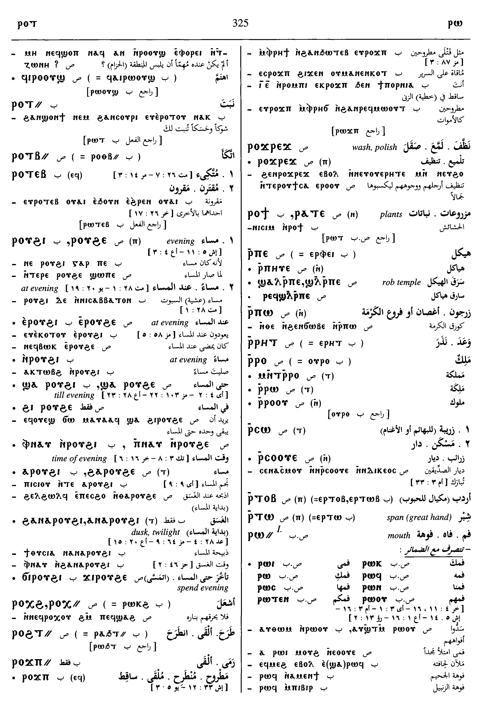

(noun male)
anatomy
mouth [στομα]
edge of weapon
door, gate [θυρα, πυλη]
edge of weapon
door, gate [θυρα, πυλη]


mouth; edge of weapon; door; gate
| mouth1518 | Crum: 288a | ||||||||
| ⲁⲧⲣⲱϥ, ⲁⲑⲣⲱϥ | mouthless, not speaking the language1519 | ||||||||
| (S, A, B, F)
ⲕⲱ ⲛⲣⲱ⸗, ⲭⲱ
ⲛⲣⲱ⸗, ⲕⲁ ⲣⲱ⸗,
ⲭⲁ ⲣⲱ⸗
(S) ⲕⲁⲣⲁⲉⲓⲧ† |
place, leave mouth, be silent [σιωπαν]1520 | Crum: 288b | |||||||
| c ⲉ- | be silent toward, about5957 | ||||||||
| c ⲉϫⲛ- | sim5958 | ||||||||
| c ⲉⲧⲃⲉ- | sim5959 | ||||||||
| c ⲉⲃⲟⲗ | 5960 | ||||||||
| c ⲉⲡϣⲱⲓ | open mouth upward, lift up voice5961 | ||||||||
| ⲕⲁ ⲣⲱϥ, ⲭⲁ ⲣⲱϥ |
(noun)
silence [σιγη]1521 |
||||||||
| (S, B) ⲁⲧⲕⲁ ⲣⲱ⸗, ⲁⲧⲭⲁ ⲣⲱ⸗ | without leaving mout shut, never silent1522 | ||||||||
| (S) ⲙⲛⲧⲣⲉϥⲕⲁ ⲣⲱϥ | silence [σιωπη]1523 | ||||||||
| (S, L) ⲕⲁⲣⲁⲉⲓⲧ† | be silent1524 | ||||||||
| (B) ϯ ⲣⲱ⸗ | give mouth, word, promise1525 | ||||||||
| (S, B)
ⲟⲩⲱⲛ ⲛⲣⲱ⸗
(S) ⲟⲩⲟⲛ ⲣⲟ |
open mouth1526 | ||||||||
| (S, B) ϫⲓ ⲣⲱ⸗, ϭⲓ ⲣⲱ⸗ | deprive, prevent, anticipate1527 | ||||||||
| (B) ϫⲉⲕ ⲣⲱ⸗ | fill mouth, satisfy [πληρουν]1528 | Crum: 289a | |||||||
| door, gate1529 | |||||||||
| ⲁⲧⲣⲟ | doorless [αθυριδωτος]1530 | ||||||||
| (S, B) ⲡⲁⲡⲣⲟ, ⲫⲁⲡⲣⲟ | be of the door, doorkeeper1531 | ||||||||
| (S, B)
ϩⲁⲛⲣⲟ
(B) ⲁⲛⲣⲟ, ϩⲟ ⲛⲣⲟ |
(noun male)
porch (?) [υπερθυρον]1532 |
Crum: 289b | |||||||
| (S)
ⲣⲁ-
(S, B) ⲣⲉ- (F) ⲗⲉ- |
(noun male)
part, fraction1533 |
||||||||
| (S)
ⲧⲣⲉ-
(B) ⲧⲉⲣⲉ- |
(noun male)
S once, f once, meaning same1534 |
||||||||
| (S)
ⲉⲣⲛ- {ⲉⲣⲟ ⲛ-}
(A, L) ⲁⲣⲛ- (F) ⲉⲗⲉⲛ- (S, B) ⲉⲣⲱ⸗ (A, L) ⲁⲣⲱ⸗ (F) ⲉⲗⲱ⸗ |
(preposition)
to mouth of, to, upon mostly with vb of motion against mostly ⲉⲣⲱ⸗ ⲛ-1535 |
||||||||
| (A) ⲛⲣⲛ- |
(preposition)
meaning same1536 |
||||||||
| (S)
ϩⲁⲣⲛ- {ϩⲁⲣⲟ ⲛ-}
(B) (ϧⲁⲣⲉⲛ-) (S) ϩⲁⲣⲱ⸗ (B) ϧⲁⲣⲱ⸗ |
(preposition)
under mouth of, beneath, before mostly = Gk dat1537 |
||||||||
| (S, A, L)
ϩⲓⲣⲛ- {ϩⲓⲣⲟ ⲛ-}
(B) ϩⲓⲣⲉⲛ- (F) ϩⲓⲗⲉⲛ- (S, A, L, B) ϩⲓⲣⲱ⸗ (F) ϩⲏⲗⲱ⸗, ϩⲓⲗⲉ⸗, ϩⲉⲗⲉ⸗ (?) |
(preposition)
at mouth, door of, at, upon1538 |
Crum: 290a | |||||||
| (S, B) ⲉⲃⲟⲗ ϩⲓⲣⲛ- |
(preposition)
from before8833 |
||||||||
See also:
Homonyms:
| view | (S, A, L, B) ⲧⲁⲡⲣⲟ (F) ⲧⲁⲡⲣⲁ, ⲧⲁⲡⲗⲁ | (noun female) mouth [στομα]126 |
| view | (A) ⲡⲁⲓϭⲉ | (noun female) mouth1309 |
| view | (S) ⲕⲏⲡⲉ, ϭⲏⲡⲉ, ϭⲉⲡⲏ (B) ⲭⲏⲡⲓ | (noun male) vaulted place, cellar,
canopy [στεγη, καλυμμα, καμαρα]
palate of mouth301 |
| view | (S, A, L, B, F) ⲱϣ (S, B) ⲉϣ- (S, L) ⲱϣ- (S, A, F) ⲁϣ- (B) ϣ- (S, B) ⲟϣ⸗ (Sa, L) ⲁϣ⸗ (B) p c ⲁϣ- | (verb) cry, announce, sound
― intr: [ηχειν, βοαν, κραζειν] ― tr: [βοαν, καλειν] read S,A,L,B,F ― intr: [αναγινωσκειν] ― tr: [αναγινωσκειν] promise, vow B ― intr: [ευχεσθαι, επαγγελεσθαι] ― tr: [ευχεσθαι, επαγγελεσθαι, ομολογειν] expect S [νομιζειν]467 |
| view | (S) ϩⲁⲉⲓⲧ, ϩⲁⲓⲉⲓⲧ, ϩⲁⲉⲓⲏⲧ, ϩⲁⲓⲧ, ϩⲉⲉⲓⲧ, ϩⲏⲉⲓⲧ, ϩⲏⲓⲉⲓⲧ, ϩⲟⲉⲓⲧ | (noun female) gateway, porch, forecourt [πυλων]274 |
| view | (S, B) ⲥⲃⲉ (F) ⲥⲃⲏ | (noun male) door [θυρα, προθυρον]1376 |
| view | (S, L, B) ϣⲟⲩϣⲧ (S, A) ϣⲱϣⲧ | (noun male) window [θυρις]
niche, alcove [θυρις]2021 |
| view | (S, A, L, B, F) ⲟⲩⲱⲛ (S, A) ⲟⲩⲛ- (S, B) ⲟⲩⲉⲛ- | (noun male) part
― alone [μερος, μισθος] ― numeral preceding S,F ― numeral following S,A1729 |
| view | (S, L) (ϩⲟⲟⲩⲣⲉ), ϩⲟⲩⲣⲉ- (S) ϩⲟⲩⲣ-, ϩⲟⲩⲣⲱ-, ϩⲟⲩⲣⲱ(ⲱ)⸗, ϩⲟⲩⲣⲟ⸗ (B) ϩⲟⲩⲣⲱ⸗ | (verb) tr: deprive
― c double acc [στερειν, παραλογιζεσθαι, αποσπαν] ― c ⲉ- sim ― passive2321 |
| view | (B) (ϣⲱⲛϩ), ϣⲟⲛϩ⸗ | (verb) tr: deprive [απογινωσκειν]1946 |
| view | (S) ϣⲱⲱⲛⲉ (F) ϣⲱⲛⲁ (S, Sf) ϣⲉ(ⲉ)ⲛⲉ- (F) ϣⲁⲛⲉ- (S) ϣⲟ(ⲟ)ⲛ⸗, ϣⲟⲟⲛⲉ† | (verb) tr: exclude, deprive
(?) [εξαιρειν]
qual: deprived272 |
| view | (S) ϩⲣⲣⲉ (B) ϩⲉⲣⲓ, ϩⲟⲩⲣⲱⲟⲩ† | (verb) intr: cease, be still
[κοπαζειν, παυεσθαι]
qual: [ηρεμος] tr: [πραυνειν]2261 |
| view | (S) ⲥϭⲣⲁϩⲧ, ⲥϭⲣⲉϩⲧ, ϣϭⲣⲁϩⲧ, ⲥϣϭⲣⲁϩⲧ (A, B) ⲥϭⲣⲏϩ | (verb) intr (qual): rest,
pause, be quiet [ησυχαζειν, σιωπασθαι]
tr (refl): S, rest oneself233 |
| view | (S, B) ⲙⲧⲟⲛ (S, B) ⲉⲙⲧⲟⲛ (A, L, F) ⲙⲧⲁⲛ (F) ⲉⲙⲧⲁⲛ (S) ⲙⲟⲧⲛ† (A) ⲙⲁⲧⲛⲉ† (B) ⲙⲟⲧⲉⲛ† (F) ⲙⲁⲧⲛ† | (verb) intr: be at rest, at
ease, be relieved of sickness [αναπαυεσθαι, υγιαζειν,
ευξυχειν, ησυχαζειν]
qual: easy, hale, satisfied [υγιης, ισχυων] tr (refl): ― rest self [αναπαυεσθαι, αναλυειν, αναξυχειν] ― go to rest, die [τελεουσθαι, αναλυειν]234 |
Homonyms:
| view | (S, B) ⲣⲟ (F) ⲣⲁ | (noun male) strand, ply of cord1317 |
| view | (S, L, B) ⲣⲱ (S) ⲣⲱⲱ (A) ⲣⲟⲩ (B) ⲣⲟ (F) ⲗⲱ | (particle) enclitic particle,
emphatic or explicative, often untranslatable
― same, again, also esp B ― emphasis or contrast indeed, but ― explicative ― emphasis, even, at all, at last ― in question, then ― after various particles, ⲁⲣⲏⲩ, perhaps, indeed379 |


Dawoud: 323a-323b,
323a, 323a, 325b-326b,
326b, 316a-316b,
629a, 629b, 681b,
449b

323

325

326

316

629

681

449